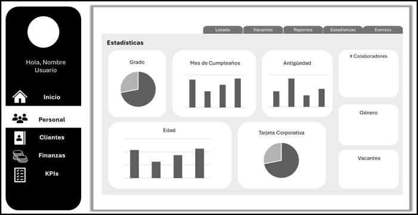
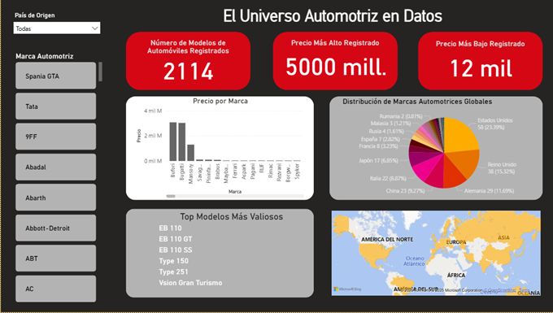

Egresada de Ingeniería en Tecnologías de la Información y Comunicaciones con conocimientos en desarrollo web, programación, bases de datos y análisis de datos. Interesada en aplicar mis habilidades técnicas en el análisis de propuestas de mejora y optimización de procesos. Motivada por contribuir al desarrollo de soluciones que generen impacto operativo y económico mediante el uso estratégico de tecnologías de la información.
PHP, Java, Python, SQL,HTML, CSS, Bootstrap Power Apps, Power BI,Excel, Power Automate, análisis de datos, desarrollo web y móvil.
Resolución de conflictos, pensamiento crítico, gestión de proyectos, atención al detalle, compromiso, responsabilidad, trabajo en equipo, gestión de tiempo, adaptabilidad, organización, iniciativa.
PowerApp para el control de áreas como Finanzas, Personal y Evaluación de Desempeño de Servicios y Clientes, vinculada a herramientas microsoft para el análisis de la información recabada y diseño de tableros en PowerBI para la visualización de estos datos
Habilidades técnicas: Power Apps,PowerBI, Excel, Sharepoint automatización de flujos de trabajo, gestión de datos internos y externos.
Logros: Enlace entre Sharepoint-PowerBI-Power Apps para crear un sistema funcional de gestión y visualización de información, flujos en Power Automate para la gestión de permisos a la información; generación de reportes automáticos, dashboards actualizables en tiempo real
Diseño Power AppPlataforma web para el módulo de Bolsa de Trabajo para el Departamento de Servicios Externos del Instituto Tecnológico de Puebla, cuyo objetivo es objetivo de facilitar la vinculación entre estudiantes y el sector laboral, optimizando la difusión de oportunidades y el acceso a información relevante para los usuarios.
La plataforma organiza sus funcionalidades en tres roles principales: Empresas, Administrador y Estudiantes. Las empresas pueden publicar vacantes, los egresados se postulan a ellas y el administrador se encarga de aprobar las vacantes, gestionar a los egresados y enviar notificaciones masivas de oportunidades laborales por carrera.
Habilidades técnicas: HTML, CSS, PHP, MySQL
Logros: Implementación de la funcionalidad de envío de correos electrónicos masivos mediante la librería PHPMailer.
El objetivo del proyecto fue recopilar información completa sobre los modelos de automóviles existentes por marca, incluyendo características clave como precio, país de origen y calificaciones de seguridad. La base de datos se construyó en Excel, utilizando Power Query para transformar y limpiar los datos. Esta información estructurada se empleó posteriormente para crear una base de conocimiento y visualizar los resultados mediante un dashboard interactivo en Power BI, ofreciendo información clara y detallada sobre el mercado automotriz global.
Habilidades técnicas: Excel, PowerBI, Power Query
Logros: Implementación de diferentes visualizaciones para generar conocimiento del mercado automotriz actual
Se diseñó y desarrolló un sistema ERP para optimizar la gestión de ventas, compras, gastos y envíos de un negocio de venta minorista en línea. El proyecto incluyó la creación de un sitio web de e-commerce completamente funcional, el cual integra un módulo de lista de deseos, un procesador de pagos y actualizaciones de envío en tiempo real, con el objetivo de mejorar la experiencia del cliente y la eficiencia operativa.
Por otro lado la administración del ERP tiene las funcionalidades de dar seguimiento a empleados,envíos,gastos, ventas e inventario; además de generar reportes sobre estos temas.
Habilidades técnicas: PHP, Bootstrap, MySQL, integración ERP, control de inventario
Logros: Funcionalidad de generación de reportes con la librería FPDF; pasarela de pago con APIs de MercadoPago y Paypal; envío de correos automatizado para pedir productos con bajo stock